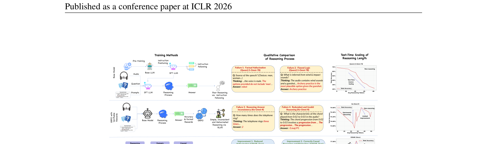
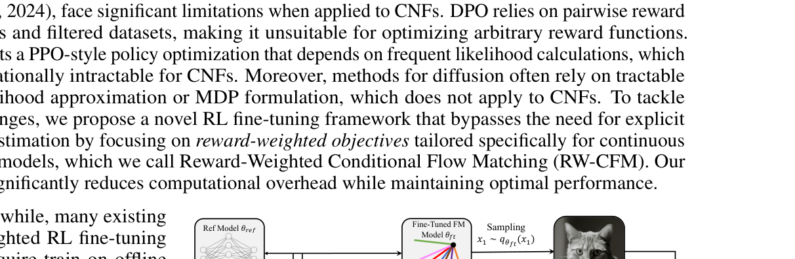

2026

ICLR 2026
CESAR: Audio LLM Reasoning via Process Rewards
🏆 SOTA MMAU · Beats Gemini 2.5 Pro & GPT-4o Audio
Resolves test-time inverse scaling in Audio LLMs by rewarding the reasoning process.
2025

NeurIPS 2025
ADRPO: Adaptive Divergence for Generative Models
🚀 2B SD3 surpasses 4.8B & 12B models
Sample-level adaptive KL — high-value samples explore freely, poor samples stay constrained.

ICLR 2025
ORW-CFM-W2: Flow Matching Self-Evolution
✨ First online RLHF for flow matching models
No human data, no mode collapse. W2 regularization preserves generation diversity.
Preprint 2025
AC-Flow: Actor-Critic for Flow Matching
📝 Under Review
Intermediate feedback + dual-stability for robust flow matching fine-tuning on SD3.
2023
ICLR 2023
⭐ Oral · 5/4176
LBC: Breaking 24 Atari World Records
🏅 10,077% HNS · 24 records · 500× data efficient
Learnable behavior control via hybrid policy mapping + bandit meta-controller.
2022
ICML 2022
GDI: Generalized Data Distribution Iteration
📈 22 world records · 9,620% HNS · 500× vs Agent57
Unified RL framework showing data distribution is the key to superhuman efficiency.